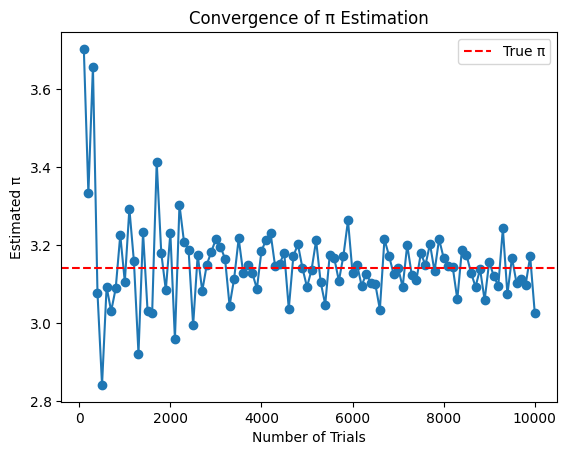

Problem 2
Estimating Pi using Monte Carlo Methods
Motivation
Monte Carlo simulations are a powerful class of computational techniques that use randomness to solve problems or estimate values. One of the most elegant applications of Monte Carlo methods is estimating the value \(\pi\) of through geometric probability. By randomly generating points and analyzing their positions relative to a geometric shape, we can approximate \(\pi\) in an intuitive and visually engaging way.
This problem connects fundamental concepts of probability, geometry, and numerical computation. It also provides a gateway to understanding how randomness can be harnessed to solve complex problems in physics, finance, and computer science. The Monte Carlo approach to \(\pi\) estimation highlights the versatility and simplicity of this method while offering practical insights into convergence rates and computational efficiency.
The Monte Carlo method to estimate π is indeed fascinating! Here's an overview and guidance to help you accomplish each part of this task.
Task 1: Estimating Using a Circle
Theoretical Foundation
The technique leverages the geometric probability of points in a square and circle:
-
Consider a unit circle with radius \( r = 1 \) inscribed in a square of side length \( 2r = 2 \).
-
The area of the circle is \( \pi r^2 = \pi \), and the area of the square is \( 4r^2 = 4 \).
-
If we randomly distribute points within the square, the proportion of points falling inside the circle compared to the total points in the square approximates the ratio of the areas:
$$ \text{Ratio} = \frac{\text{Points inside the circle}}{\text{Total points in the square}} \approx \frac{\text{Area of the circle}}{\text{Area of the square}} = \frac{\pi}{4} $$
- Therefore, we can estimate \( \pi \) as:
$$ \pi \approx 4 \times \frac{\text{Points inside the circle}}{\text{Total points}} $$
Simulation
Here's a step-by-step guide:
-
Random Point Generation:
- Generate random (x, y) coordinates within the square \( [-1, 1] \times [-1, 1] \).
- Ensure randomness by using functions like
random.uniform(-1, 1)in Python.
-
Circle Membership Check:
- Use the equation \( x^2 + y^2 \leq 1 \) to determine if a point lies inside the circle.
- Count the number of points satisfying this condition.
-
π Estimation:
- Apply the formula \( \pi \approx 4 \times \frac{\text{Points inside the circle}}{\text{Total points}} \).
Example Python snippet:
import matplotlib.pyplot as plt
import random
N = 10000 # Number of random points
points_inside = 0
x_inside, y_inside, x_outside, y_outside = [], [], [], []
for _ in range(N):
x, y = random.uniform(-1, 1), random.uniform(-1, 1)
if x**2 + y**2 <= 1:
points_inside += 1
x_inside.append(x)
y_inside.append(y)
else:
x_outside.append(x)
y_outside.append(y)
# Estimation of π
pi_estimate = 4 * points_inside / N
print(f"Estimated π: {pi_estimate}")
# Visualization
plt.figure(figsize=(6, 6))
plt.scatter(x_inside, y_inside, color="green", s=1)
plt.scatter(x_outside, y_outside, color="red", s=1)
plt.gca().set_aspect("equal", adjustable="box")
plt.title(f"Monte Carlo π Estimation (N={N})")
plt.show()
Estimated π: 3.1412

Analysis
- Accuracy Improvement:
- The accuracy of the π estimate increases with more points due to the law of large numbers.
- Convergence Rate:
- Convergence is proportional to \( \frac{1}{\sqrt{N}} \), where \( N \) is the number of points.
- For higher precision, use a larger \( N \), but note that computational time also increases.
- Considerations:
- Randomness quality affects the accuracy; use high-quality pseudorandom number generators.
- Parallelization can speed up computations for large \( N \).
Task 2: Estimating Buffon's Needle
1. Theoretical Foundation
Buffon's Needle Problem:
-
The problem involves dropping a needle of length \(L\) onto a plane with parallel lines spaced \(D\) units apart (\(D \geq L\)).
-
The probability \(P\) that the needle crosses a line is given by:
$$ P = \frac{2L}{\pi D} $$
- Rearranging, π can be estimated as:
$$ \pi \approx \frac{2L \cdot n}{D \cdot h} $$
where:
\(n\) = Total number of needle drops
\(h\) = Number of times the needle crosses a line.
2. Simulation
Steps:
1. Randomly generate the position and orientation of the needle.
2. Calculate whether the needle crosses a line based on its center position and angle.
3. Repeat for a large number of drops (\(n\)).
4. Use the formula to estimate π.
Python Implementation: Here's an example snippet for the Buffon's Needle simulation:
import numpy as np
def buffons_needle_simulation(needle_length, line_spacing, num_trials):
crosses = 0
for _ in range(num_trials):
# Random center position and angle
center = np.random.uniform(0, line_spacing / 2) # Center is within half-spacing
angle = np.random.uniform(0, np.pi) # Angle between 0 and π
# Check if needle crosses a line
if center <= (needle_length / 2) * np.sin(angle):
crosses += 1
# Estimate π
if crosses > 0:
pi_estimate = (2 * needle_length * num_trials) / (line_spacing * crosses)
else:
pi_estimate = None
return pi_estimate
# Parameters
needle_length = 1.0
line_spacing = 2.0
num_trials = 10000
pi_estimate = buffons_needle_simulation(needle_length, line_spacing, num_trials)
print(f"Estimated π: {pi_estimate}")
Output:
Estimated π: 3.119151590767311
3. Visualization
Plot the Simulation: You can create a graphical representation using Matplotlib, showing the needle positions relative to the lines.
Example for visualization:
import matplotlib.pyplot as plt
def visualize_simulation(needle_length, line_spacing, num_needles):
fig, ax = plt.subplots(figsize=(8, 8))
for _ in range(num_needles):
center = np.random.uniform(0, line_spacing / 2)
angle = np.random.uniform(0, np.pi)
# Needle end points
x1 = center - (needle_length / 2) * np.cos(angle)
x2 = center + (needle_length / 2) * np.cos(angle)
y = [0, 0]
ax.plot([x1, x2], y, 'r-')
# Plot lines
for i in range(5): # Adjust for spacing
ax.axvline(i * line_spacing / 2, color='k', linestyle='--')
plt.title("Buffon's Needle Simulation")
plt.show()
visualize_simulation(needle_length=1.0, line_spacing=2.0, num_needles=100)

4. Analysis
Convergence of π: Run simulations with increasing numbers of needle drops. Record the estimates and plot the convergence.
Example:
import matplotlib.pyplot as plt
def analyze_convergence(needle_length, line_spacing, max_trials):
estimates = []
trials = []
for num_trials in range(100, max_trials + 1, 100):
pi_estimate = buffons_needle_simulation(needle_length, line_spacing, num_trials)
estimates.append(pi_estimate)
trials.append(num_trials)
plt.plot(trials, estimates, marker='o')
plt.axhline(np.pi, color='red', linestyle='--', label="True π")
plt.xlabel("Number of Trials")
plt.ylabel("Estimated π")
plt.title("Convergence of π Estimation")
plt.legend()
plt.show()
analyze_convergence(needle_length=1.0, line_spacing=2.0, max_trials=10000)
